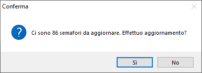

Introduzione analisi ABC vendite
Le analisi consentono di raggruppare i clienti in 3 gruppi, identificati dalle lettere A, B o C, secondo la legge di Pareto, conosciuta anche come legge 80/20; in pratica sui grandi numeri, il 20% di un campione produce l'80% del valore.
Il termine ABC deriva dalla suddivisione dei clienti in 3 fasce:
A che identifica i clienti che producono l’80% dell'importo interessato dall'analisi
B che identifica i clienti che producono il successivo 15% dell'importo interessato dall'analisi
C che identifica i clienti che producono il restante 5% dell'importo interessato dall'analisi

All'accesso alle procedure, se è attivo il servizio di Credit Shield, l'utente connesso è configurato come utente Company Shield, ha l'autorizzazione alla visualizzazione dei semafori e sono presenti semafori da aggiornare, viene mostrata la finestra a lato che effettua la richiesta di conferma dell'aggiornamento; rispondendo affermativamente vengono aggiornati i semafori, altrimenti non sarà effettuato nessun aggiornamento; in ogni caso si accede alla finestra principale per l'inserimento dei limiti di analisi.
Il menù raccoglie le procedure di analisi ABC relative al ciclo attivo.